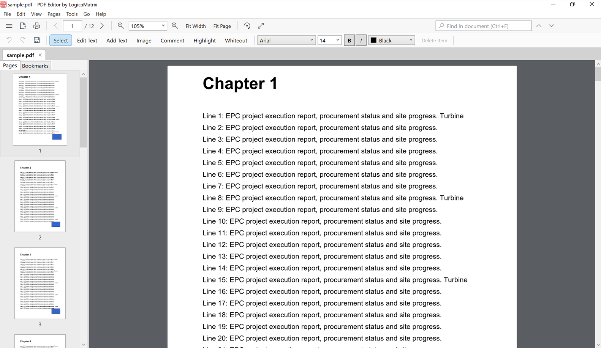

Many documents, one window
Open several PDFs at once, each in its own tab. Every tab keeps its own edits, undo history and zoom.
PDF Editor by LogicaMatrix is a fast, lightweight PDF viewer and editor. Work on many documents in tabs, change text, add images and comments, merge, split, compress and convert, all on your own PC.
The button opens the download page on GitHub. Setup is about 8 MB; if your PC lacks the Microsoft .NET 8 Desktop Runtime, setup downloads it for you.
PDF Editor by LogicaMatrix

Read, correct, annotate and organise your documents without juggling several programs.
Open several PDFs at once, each in its own tab. Every tab keeps its own edits, undo history and zoom.
Click a line of text and retype it, or place new text anywhere with your choice of font, size, bold, italic and colour.
Insert pictures and leave comment notes. Comments are saved as real PDF comments, so other readers show them too.
Highlight what matters, or cover an area with a solid colour. Move and resize anything you add.
Delete, rotate and reorder pages. Insert blank pages or pages from another PDF, and extract pages to a new file.
Every edit and page change can be undone. Save when you are happy, and you are asked before closing unsaved work.
Smooth scrolling, thumbnails, bookmarks, zoom, search and full screen. Password-protected PDFs and printing are supported.
A download of about 8 MB that opens maximized and ready to work. Pages are shown with the PDF engine built into Windows.
Documents are processed on your own PC and never uploaded. Updates are checked quietly and installed only if you agree.
The everyday jobs people usually pay for or hunt websites to do, built in.
* Word to PDF needs Microsoft Word or LibreOffice on your PC. PDF to Word gives its best layout when Microsoft Word is installed. A watermark that is part of a scanned image cannot be removed.
Free to use. No sign-up and no account needed to download or install.
Update information is digitally signed, so the app ignores anything not published by LogicaMatrix.
The app only tells you an update exists. Nothing installs until you click “Update now”.
Three steps, and no technical knowledge needed.
PDFEditor-Setup-….exe under Assets.Get-FileHash .\PDFEditor-Setup-….exe in PowerShell. Checksum of this release: Yes. PDF Editor by LogicaMatrix is free software and free to use.
No. Your PDFs are opened and edited on your own computer. The only network use is a small update check, and, during setup, the Microsoft .NET runtime download if your PC needs it.
A scanned page is a picture, so its text cannot be edited. You can still cover an area with Whiteout and type over it with Add Text.
It covers the original text with a patch and places your new text on top. The old text may still be present underneath, so please do not use it to hide confidential information.
Word to PDF needs Microsoft Word or LibreOffice installed. PDF to Word works best with Microsoft Word; without it a basic text-only conversion is used.
The app checks for new versions and shows a banner; click Update now to install one. You can switch the check off under Help. To uninstall, open Settings → Apps → Installed apps, find the app and choose Uninstall.
Windows 10 and Windows 11, 64-bit.